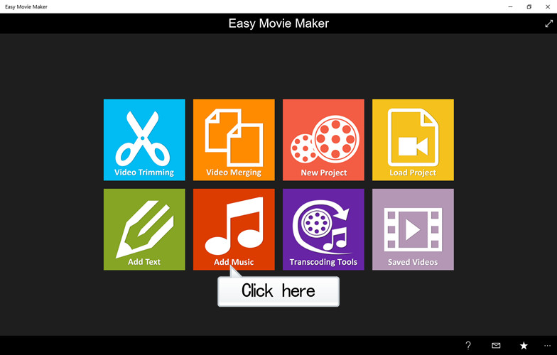
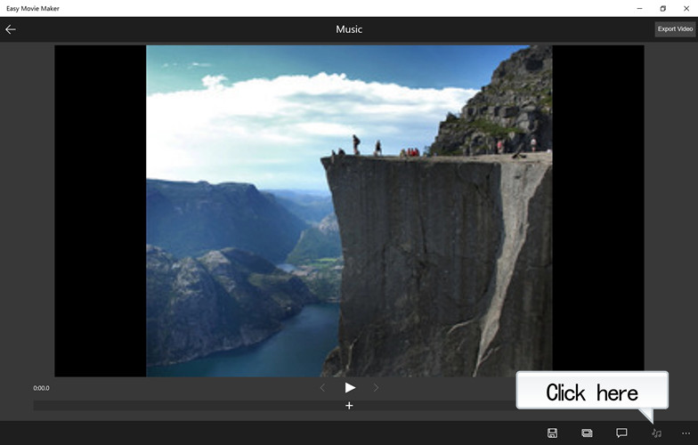
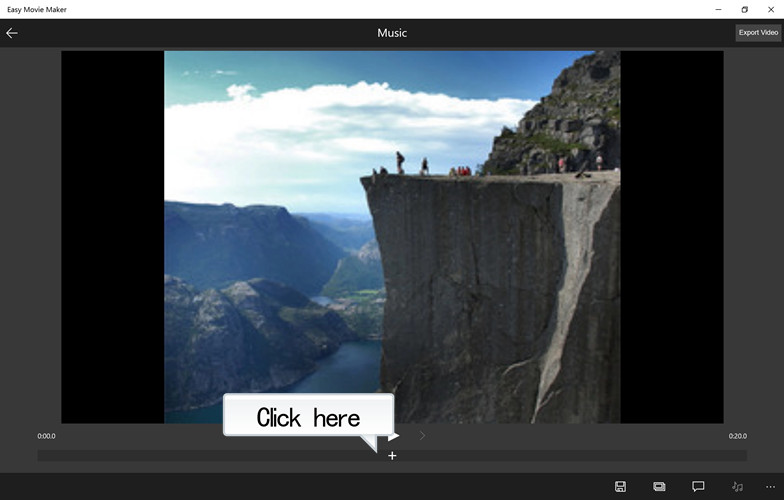
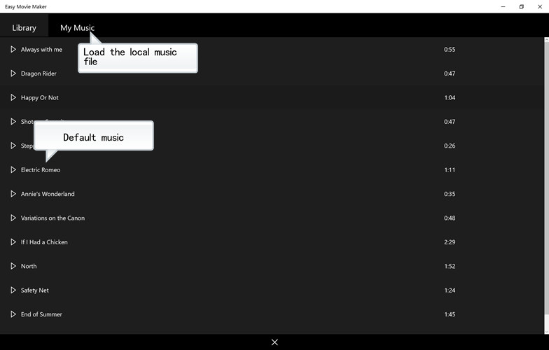
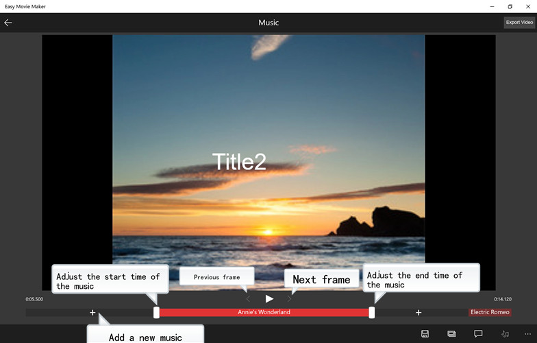
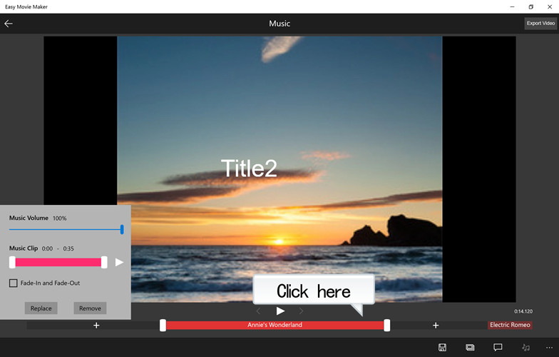

There are two ways to add music to a video.
1. Click "Add Music" on the main page.

2. Go to the "Music" page while you add or edit a project.

Click "+" icon at the bottom to add a new text.


Adjust the start and end time of the music by moving the white button on both sides of the red area at the bottom.

Click the red area at the bottom to pop-up the dialog box for the music settings.
